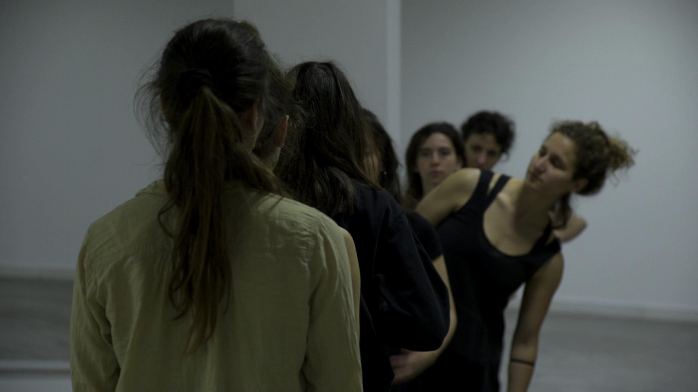
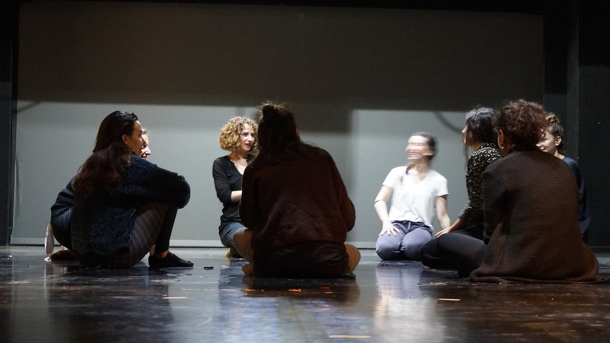
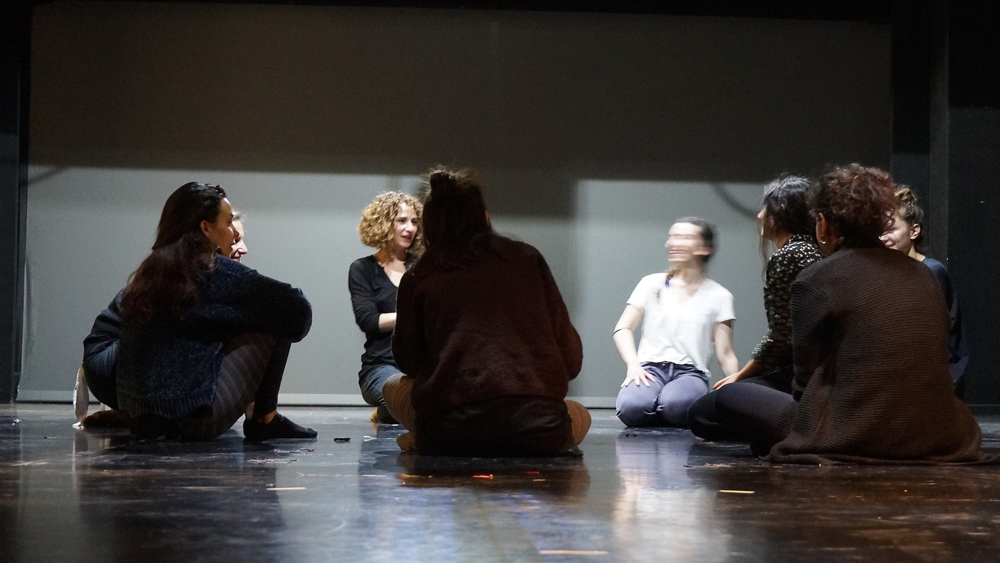

"US - and - THE OTHERS" - ATHENS VIDEO DANCE PROJECT
 

Athens School of Fine Arts, Athens Greece April 2017.
AVD Project
Role: Sound Designer - Performer
Participating as both a sound designer and performer in "US-and-THE OTHERS," I engaged with themes of otherness and diversity through a multifaceted artistic lens. In this project, I was responsible for creating sound effects and managing the overall sound design, which significantly enhanced the audience's experience during screenings of dance films and lectures by artists and social science experts. My role involved not only crafting an auditory landscape that complemented the visual elements but also ensuring that the sound design resonated with the complex social issues being discussed. This dual involvement allowed me to creatively explore these themes while contributing to a collaborative environment that fostered dialogue among artists and experts alike. By integrating sound with movement and spoken word, I aimed to create an immersive experience that highlighted the nuances of diversity and the concept of "otherness." This project exemplified how sound can serve as a powerful tool for storytelling, enriching the audience's understanding of the material presented and inviting them to reflect on their own perspectives within a broader societal context.